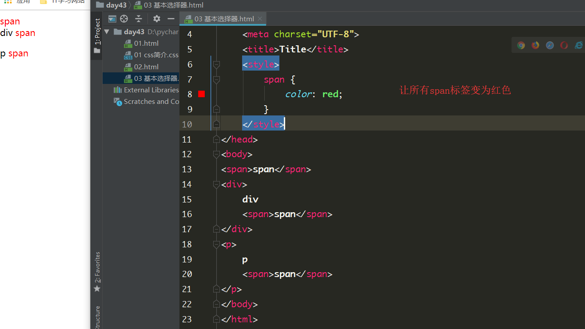

目录
css： 层叠样式表
css语法结构：
选择器 {属性1：属性值1}
/*单行注释*/
/*
多行注释1
多行注释2
*/<link rel="stylesheet" href="01%20css简介.css"><style>
h1 {
color: red;
}
</style><h1 style="color: yellow">文本信息</h1>
/*让所有的span标签变成红色*/
<style>
span {
color: red;
}
</style> <style>
#d2 {
color: gold;
}
</style> <style>
.c1 {
color: red;
}
</style>选择所有
<style>
* {
color: orchid;
}
</style>分组
嵌套
a标签有四种状态
我们将input框鼠标带你进去之后的那个状态叫做input获取焦点，
鼠标移出去之后的状态叫做input框失去焦点
<style>
a:link { /*没有点击为红色*/
color: red;
}
a:hover { /*鼠标悬浮之后为蓝色*/
color: blue;
}
a:active { /*点击之后不放手为黄色*/
color: yellow;
}
a:visited { /*点击之后回到原来的页面 显示为绿色*/
color: green;
}
</style>可以清除浮动带来的负面影响，可以通过css添加文本内容
常用的给首字母设置特殊样式：
p:first-letter {
font-size: 48px;
color: red;
}/*在每个<p>元素之前插入内容*/
p:before {
content:"*";
color:red;
}/*在每个<p>元素之后插入内容*/
p:after {
content:"[?]";
color:blue;
} 选择器相同的情况下， 引入方式不同
遵循就近原则， 谁离标签更近，就听谁的
选择器不同的情况下
行内选择器 > id选择器 > 类选择器 > 元素选择器